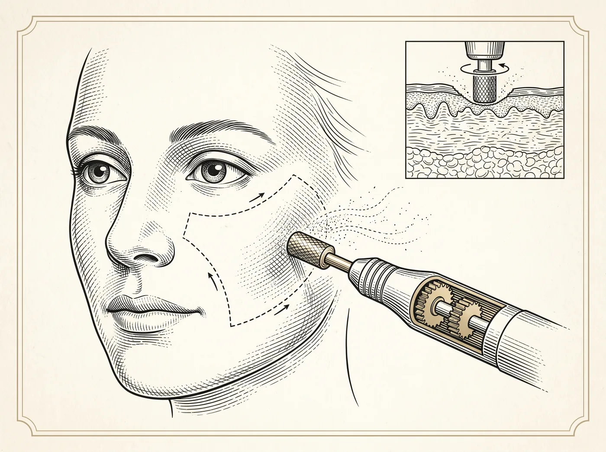

Não cirúrgico · Procedimento não cirúrgico
A dermoabrasão — também chamada de peeling mecânico — esfolia de forma controlada a camada superficial da pele para renovar sua aparência. Pode ser feita em pequenas áreas ou em toda a face, sob anestesia adequada a cada caso.

Objetivos do procedimento
Todo procedimento possui indicações, contraindicações e riscos. A avaliação individual com um médico é indispensável para indicar o tratamento adequado a cada caso.
Perguntas frequentes
Um instrumento rotativo — ou a técnica manual — remove de modo controlado a camada mais superficial da pele, estimulando a renovação celular.
A pele passa por fases de vermelhidão e reepitelização, com prazos que variam conforme a profundidade do tratamento. Proteção solar rigorosa é indispensável no período.
O princípio é o mesmo — renovar camadas da pele —, mas a dermoabrasão é mecânica, enquanto o peeling químico utiliza substâncias. A escolha depende da indicação de cada caso.
A avaliação do fototipo e da condição da pele define a indicação e os parâmetros seguros para cada pessoa.
O próximo passo
Num hospital dedicado exclusivamente à cirurgia plástica, sua avaliação começa com escuta — e termina com um plano feito para você.